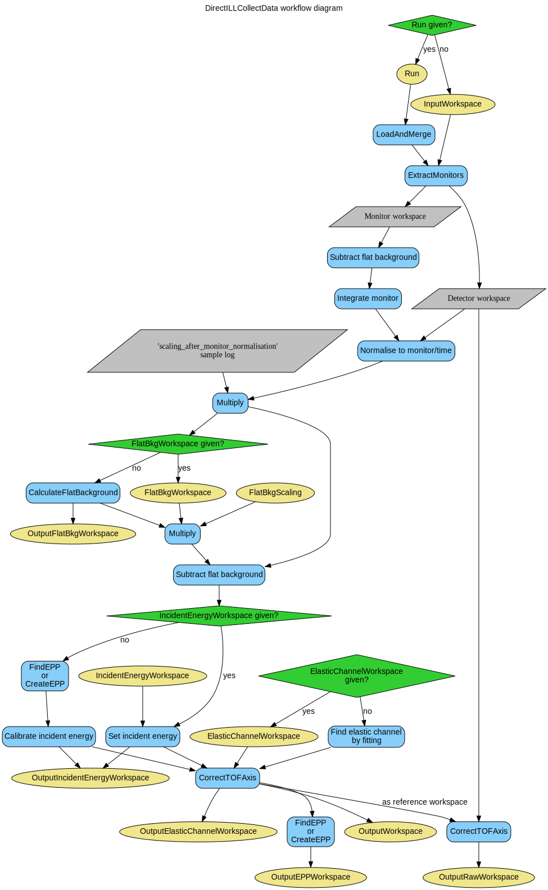

\(\renewcommand\AA{\unicode{x212B}}\)
DirectILLCollectData v1¶

DirectILLCollectData dialog.¶
Summary¶
An initial step of the reduction workflow for the direct geometry TOF spectrometers at ILL.
See Also¶
Properties¶
Name |
Direction |
Type |
Default |
Description |
|---|---|---|---|---|
Run |
Input |
list of str lists |
An input run number (or a list thereof) or a filename. Allowed values: [‘nxs’] |
|
InputWorkspace |
Input |
Input workspace if no run is given. |
||
OutputWorkspace |
Output |
Mandatory |
A flux normalized and background subtracted workspace. |
|
Cleanup |
Input |
string |
Cleanup ON |
What to do with intermediate workspaces. Allowed values: [‘Cleanup ON’, ‘Cleanup OFF’] |
SubalgorithmLogging |
Input |
string |
Logging OFF |
Enable or disable subalgorithms to print in the logs. Allowed values: [‘Logging OFF’, ‘Logging ON’] |
EPPCreationMethod |
Input |
string |
EPP Method AUTO |
Method to create the EPP table for detectors (monitor is awlays fitted). Allowed values: [‘EPP Method AUTO’, ‘Fit EPP’, ‘Calculate EPP’] |
SigmaForCalculatedEPP |
Input |
number |
Optional |
Nominal sigma for the EPP table when EPPCreationMethod is set to Calculate EPP (default: 10 times the first bin width). |
ElasticChannel |
Input |
string |
Elastic Channel AUTO |
How to acquire the nominal elastic channel. Allowed values: [‘Elastic Channel AUTO’, ‘Default Elastic Channel’, ‘Fit Elastic Channel’] |
ElasticChannelWorkspace |
Input |
A single value workspace containing the nominal elastic channel index(can be floating point). Overrides ElasticChannel. |
||
Monitor |
Input |
number |
Optional |
Index of the incident monitor, if not specified in instrument parameters. |
IncidentEnergyCalibration |
Input |
string |
Energy Calibration AUTO |
Control the incident energy calibration. Allowed values: [‘Energy Calibration AUTO’, ‘Energy Calibration ON’, ‘Energy Calibration OFF’] |
IncidentEnergyWorkspace |
Input |
A single-valued workspace holding a previously determined incident energy. |
||
FlatBkg |
Input |
string |
Flat Bkg AUTO |
Control flat background subtraction. Allowed values: [‘Flat Bkg AUTO’, ‘Flat Bkg ON’, ‘Flat Bkg OFF’] |
FlatBkgScaling |
Input |
number |
1 |
Flat background multiplication factor. |
FlatBkgAveragingWindow |
Input |
number |
30 |
Running average window width (in bins) for flat background. |
FlatBkgWorkspace |
Input |
Workspace with previously determined flat background data. |
||
GroupDetHorizontallyBy |
Input |
number |
1 |
Step to use when grouping detectors horizontally (between tubes) to increase the statistics for flat background calculation. |
GroupDetVerticallyBy |
Input |
number |
1 |
Step to use when grouping detectors vertically (inside the same tube) to increase the statistics for flat background calculation. |
Normalisation |
Input |
string |
Normalisation Monitor |
Normalisation method. Allowed values: [‘Normalisation Monitor’, ‘Normalisation Time’, ‘Normalisation OFF’] |
MonitorPeakWidthInSigmas |
Input |
number |
7 |
Width of the monitor peak in multiples of ‘Sigma’ in monitor’s EPP table. |
OutputRawWorkspace |
Output |
Non-normalized and non-background subtracted output workspace for DirectILLDiagnostics. |
||
OutputElasticChannelWorkspace |
Output |
Output workspace for elastic channel index. |
||
OutputEPPWorkspace |
Output |
Output workspace for elastic peak positions. |
||
OutputIncidentEnergyWorkspace |
Output |
Output workspace for calibrated incident energy. |
||
OutputFlatBkgWorkspace |
Output |
Output workspace for flat background. |
Description¶
An initial step of the reduction workflow for the direct geometry TOF spectrometers at ILL. It reads and merges NeXus files, normalizes data to monitor, subtracts a flat background, and adjusts the TOF scale to conform to Mantid standards. More information on how this algorithm interacts with the rest of the ILL’s TOF reduction suite can be found here. The workflow of this algorithm is shown in the diagram below:
Input data¶
Either Run or InputWorkspace has to be specified. Run can take multiple run numbers. In this case the files will be merged using the LoadAndMerge algorithm. For example, '/data/0100-0103+0200-0202' would merge runs 100, 101, 102, 103, 200, 201 and 202 from directory /data/.
Basic reduction steps¶
Some basic reduction steps are done to the input data.
Separate monitor and detector spectra to different workspaces.
Optionally normalise the detector specta to monitor counts or acquisition time.
Subtract time-independent background from the detector spectra.
Optionally find the elastic peak positions.
Optionally calibrate the incident energy.
Adjust the TOF axis so that the elastic time-of-flight corresponds to the L1+L2 distances.
Find elastic peak positions again, if OutputEPPWorkspace is requested.
More detailed description of some of these steps is given below.
Note
The initial time-of-flight axis of ILL’s spectrometers has an arbitrary starting point. Therefore, the TOF values in the intermediate workspaces do not correspond to any physical flight distances until they are corrected at step 6.
Normalisation to monitor¶
If Normalisation is set to 'Normalisation Monitor', the data is divided by the monitor counts. The monitor spectrum is specified by the ‘default-incident-monitor-spectrum’ instrument parameter or, if not present, by the Monitor property. A flat background is subtracted from the spectrum as described below except no background scaling is applied. The monitor peak is found using FindEPP. If this fails, the entire monitor range is integrated. Otherwise the spectrum is integrated over a range \(\pm\) MonitorPeakWidthInSigmas \(\cdot \sigma\) around the position of the monitor peak.
Afterwards, the intensities are multiplied by a factor defined by the ‘scaling_after_monitor_normalisation’ entry in instrument parameters, if present.
Note
If the sample log entry monitor.monsum (monitor1.monsum on IN6) is less than 100, monitor normalisation will be disabled and the data normalised to time.
Normalisation to time¶
When Normalisation is set to 'Normalisation Time', the data is divided by the duration of the experiment, in seconds. By default, the duration sample log is used except for ILL’s IN4 instrument where the actual_time log is used instead.
Flat background subtraction¶
A flat time-independent background for subtraction can be given by FlatBkgWorkspace. If this input property is not specified, flat background will be calculated from the detector spectra by CalculateFlatBackground using the Moving Average mode. The FlatBkgAveragingWindow property is passed directly to CalculateFlatBackground as AveragingWindowWidth.
Before subtraction, the background workspace is multiplied by FlatBkgScaling.
The background used for the subtraction can be retrieved using the OutputFlatBkgWorkspace property. This property holds either the same workspace as FlatBkgWorkspace, or a workspace created by CalculateFlatBackground. Note that no FlatBkgScaling is applied to this workspace.
Elastic peak positions (EPP)¶
Information on the elastic peaks (position, peak width) is needed for incident energy calibration, as well as for the DirectILLDiagnostics and DirectILLIntegrateVanadium algorithms. This data comes in the form of an EPP workspace which is a TableWorkspace containing columns specified by the FindEPP algorithm.
If an EPP table is needed, the algorithm either fits the elastic peaks using FindEPP, or calculates their nominal positions using CreateEPP. This behavior can be controlled by the EPPCreationMode property. The default ('EPP Method AUTO') is to calculate the positions for the IN5 and PANTHER instruments, and to fit for any other instrument.
In the calculation case, a nominal peak width can be given using the Sigma property. The peak width is needed for some integration operations. If Sigma is not specified, ten times the first bin width in the workspace will be used.
Incident energy¶
The incident energy and the nominal TOF channel are needed to adjust the TOF axis to conform to the standard Mantid notation.
The incident energy written in the data files of IN4 and IN6 and accessible via the Ei sample log may be inaccurate. To ensure a correct value is used for the TOF axis adjustment, the value can be calibrated using GetEiMonDet. The operation is controlled by IncidentEnergyCalibration. Elastic peak positions are needed for the calculation which can be supplied by EPPWorkspace, otherwise FindEPP is used.
The calibrated energy can be retrieved as a single-value workspace using the OutputIncidentEnergyWorkspace property. This workspace can be passed to further calls to DirectILLCollectData to force a common Ei and thus a common TOF axis between the datasets. This is needed for, e.g., empty container subtraction.
Note
Incident energy calibration will be disabled if the sample log entry monitor.monsum (monitor1.monsum on IN6) is less than 100.
TOF axis adjustment¶
The TOF axis is adjusted such that the nominal elastic channel corresponds to the L1 + L2 distance. For this, incident energy and elastic channel number are needed. The energy is read from the Ei sample log while the elastic channel from Detector.elasticpeak. Alternatively, the elastic channel can be determined by fitting, as done with IN5 and PANTHER. Whether to use the sample logs or fitting is determined by the ElasticChannel property. The channel can be given also directly as a single valued workspace in ElasticChannelWorkspace.
Optional inputs and outputs¶
The algorithm has some optional input and output workspaces. Their purpose is to extract some common information from a single data set and use it as input for other algorithms or data sets. An example would be backgrounds extracted from a low temperature measurement which can be used when reducing data taken at higher temperatures.
Some optional input and output workspaces come in pairs. If the input workspace is specified, it will be used in the reduction and returned as the corresponding output workspace. If the input workspace is not specified, the needed information is calculated from the current data, and returned in the output workspace.
IncidentEnergyWorkspace — OutputIncidentEnergyWorkspace: single-valued workspace containing calibrated incident energy, used for incident energy calibration.
FlatBkgWorkspace — OutputFlatBkgWorkspace: a MatrixWorkspace containing the flat backgrounds. Used for flat background subtraction. Note that FlatBkgScaling is not applied to OutputFlatBkgWorkspace.
ElasticChannelWorkspace — OutputElasticChannelWorkspace: a single-valued workspace containing the index of the nominal elastic channel (can be a floating-point number). Used for the TOF axis adjustment.
Raw output workspace¶
The OutputRawWorkspace property provides an access to a ‘raw’ data workspace in the sense that no normalisation or background subtraction is applied to this workspace. The raw workspace is useful as an input workspace for the DirectILLDiagnostics algorithm.
ILL’s instrument specific defaults¶
The following settings are used when the AUTO keyword is encountered:
Property |
IN4 |
IN5 |
IN6 |
PANTHER |
SHARP |
Others |
|---|---|---|---|---|---|---|
EPPCreationMethod |
Fit EPP |
Calculate EPP |
Fit EPP |
Calculate EPP |
Fit EPP |
Fit EPP |
ElasticChannel |
Fit Elastic Channel |
Fit Elastic Channel |
Fit Elastic Channel |
Fit Elastic Channel |
Fit Elastic Channel |
Default Elastic Channel |
IncidentEnergyCalibration |
Energy Calibration ON |
Energy Calibration OFF |
Energy Calibration ON |
Energy Calibration OFF |
Energy Calibration ON |
Energy Calibration ON |
FlatBkg |
Flat Bkg ON |
Flat Bkg OFF |
Flat Bkg ON |
Flat Bkg OFF |
Flat Bkg ON |
Flat Bkg ON |
Usage¶
For usage of this algorithm as part of the direct geometry data reduction, check the examples here.
Note
To run these usage examples please first download the usage data, and add these to your path. In Mantid this is done using Manage User Directories.
Example - Usage as an advanced loader
# It is recommended to use DirectILLCollectData over the basic Load
preprocessed = DirectILLCollectData('ILL/IN4/087294+087295.nxs')
# Compare to simply loading the data
raw = Load('ILL/IN4/087294+087295.nxs', ConvertToTOF=True)
# The workspace loaded by 'Load' includes monitor data which
# makes 2D plotting difficult
nRaw = raw.getNumberHistograms()
print("Number of histograms in 'raw': {}".format(raw.getNumberHistograms())
+ ", and in 'preprocessed': {}".format(preprocessed.getNumberHistograms()))
# Notably, DirectILLCollectData sets the workspace up such that conversion
# from TOF to wavelength produces the correct values
preprocessed_wl = ConvertUnits(preprocessed, 'Wavelength')
raw_wl = ConvertUnits(raw, 'Wavelength')
# Elastic peak is around channel 150
print('Wavelength from sample logs: {:.3}A'.format(raw.run().getProperty('wavelength').value))
print("'raw' wavelength at channel 150: {:.3}A (incorrect!)".format(raw_wl.readX(0)[149]))
print("'preprocessed' wavelength at channel 150: {:.3}A".format(preprocessed_wl.readX(0)[149]))
Output:
Number of histograms in 'raw': 397, and in 'preprocessed': 396
Wavelength from sample logs: 3.06A
'raw' wavelength at channel 150: 1.64A (incorrect!)
'preprocessed' wavelength at channel 150: 3.04A
Categories: AlgorithmIndex | ILL\Direct | Inelastic\Reduction | Workflow\Inelastic
Source¶
Python: DirectILLCollectData.py